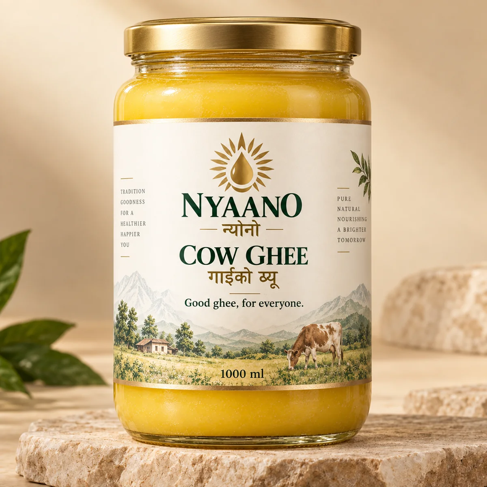

Familiar taste
Developed to feel at home in everyday Nepali food rather than perform as a niche wellness product.
NYAANO / न्यानो
गाईको घ्यू
Familiar, warm and made for everyday family use.
NYAANO Cow Ghee is being developed as a clearly identified cow ghee with a familiar everyday taste, professional packaging and accountable quality standards.
See our standard

The short answer
Clearly identified animal source. NYAANO is not being built as a vague generic dairy ghee. Cow and buffalo are separate products, with separate labels and production controls.
Developed to feel at home in everyday Nepali food rather than perform as a niche wellness product.
The product should feel dependable from one purchase to the next, not like a different jar every time.
Professional accountability without positioning everyday ghee as a luxury purchase.
On-pack clarity
The product name, animal source, batch identity and core pack information are designed to be easy to see rather than buried under marketing language.
Before we make the promise
Claims such as quality checked, batch identified and tamper sealed should only appear on the live pack after the underlying manufacturing and QC SOPs are operational.
NYAANO
असल घ्यू, सबैको लागि।
Retail & wholesale enquiries